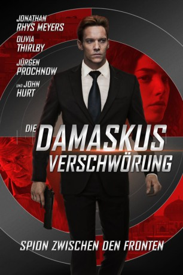

#12157 Die Damaskus Verschwörung
Alternativ: Damascus Cover (Englischer Titel)
 
 IMDB-Wertung: 5.1 / 10
IMDB-Wertung: 5.1 / 10  Tomatometer: 14
Tomatometer: 14  Metascore: 36
Metascore: 36 
Der desillusionierte israelische Spion Ari Ben-Sion lebt undercover als deutscher Geschäftsmann in Berlin. Als jedoch seine Mission, einen syrischen Doppelagenten lebend nach Israel zu bringen, scheitert, wird auch Ari zurück nach Jerusalem beordert. Aris Mossad-Kontakt Miki ist sich nicht sicher, wie viele seiner Mitarbeiter entlarvt wurden und schickt Ari deswegen auf eine Rettungsmission nach Syrien. Doch auch dieser Auftrag birgt unabsehbare Gefahren und schon bald kämpft Ari in Damaskus um sein bloßes Überleben, auf einer Mission, überschattet von Intrigen, Verschwörungen und Rache.
Jahr: 2017
Dauer: 93 Minuten
FSK: 12
Land: England Studio: New KSMTonspuren: DTS - ,
Untertitel: Deutsch,
Auflösung: 1080p (1920x800) Größe: 7249 MB
Genre: Thriller, Mystery
Regisseur: Daniel Zelik Berk
Drehbuch: Daniel Zelik Berk, Samantha Newton
Soundtrack: Harry Escott
Darsteller:
 Jonathan Rhys Meyers als Ari Ben-Sion(Hans Hoffmann)
Jonathan Rhys Meyers als Ari Ben-Sion(Hans Hoffmann) Olivia Thirlby als Kim Johnson
Olivia Thirlby als Kim Johnson Jürgen Prochnow als Franz Ludin
Jürgen Prochnow als Franz Ludin Igal Naor als General Fuad
Igal Naor als General Fuad Navid Negahban als Suleiman Sarraj
Navid Negahban als Suleiman Sarraj John Hurt als Miki
John Hurt als Miki- Aki Avni als Shaul
 Selva Rasalingam als Sabri
Selva Rasalingam als Sabri- Shani Aviv als Rachel Kahtib
- Gem Carmella als Sabeen
- Tsahi Halevi als Rami Elon
- Herzl Tobey als Ehud
- Sara von Schwarze als Dr. Rotem
 Wolf Kahler als Colonel Ludwig Streicher
Wolf Kahler als Colonel Ludwig Streicher- Neta Riskin als Yael
- Ben Affan als Mustafa
- Luisa Guerreiro als Karen
- Mekki Kadiri als Yosef
- Hamza Kadri als Bellboy
- Benny Maslov als Dimitry
 Hassani Shapi als Syrian Trade Minister
Hassani Shapi als Syrian Trade Minister- Hartmut Volle als Heinrich Wolf
- Anas El Baz als Syrian Agent
- Jonathan Ledbury als Rob
- Ari Thomas als Boy in Football Shirt
Datei: X:\2017(A-F)\Damaskus Verschwörung, Die (2017, FSK12, 1920x800).mkv seit 30.12.2019
Festplatte: HD 2017(A-Z)-2018(A-F)
 Es gibt insgesamt 152 Filme in der Gruppe '2017(A-F)'
Es gibt insgesamt 152 Filme in der Gruppe '2017(A-F)'